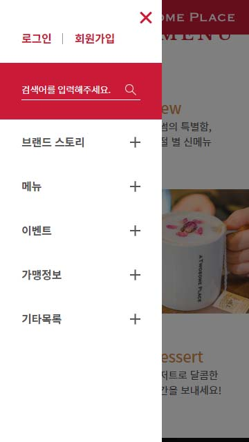

View

- 

작업한 페이지의 일부분입니다.
타 영화관 사이트의 불편함을 해소하기 위해 시작한 프로젝트입니다. 저를 포함해 3명의 조원이 작업했습니다. 페이지의 경우 인덱스의 레이아웃과 박스오피스/최신개봉작, 영화 - 최신개봉작, 회원가입을 작업했으며, 공동으로 작업한 인덱스의 경우 본문을 참고해주세요.
2019.11.11~2019.12.13
퍼블리셔: 김동현 / 디자이너: 구혜진, 김민진
HTML5, CSS3, JQuery, Photoshop, Illustator
작업한 페이지의 일부분입니다.
위와 같은 색상을 사용하여 페이지를 구성했습니다. 메인 컬러의 경우 투썸의 원래 퍼스널 컬러이고, 금색의 경우 강조와 포인트를 위해 임의로 제가 추가하였습니다.